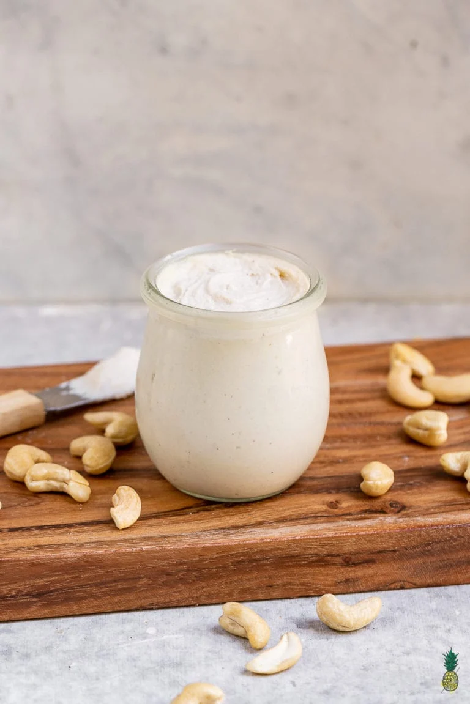

Cashew Cream Cheese

Description
The cashew cream cheese is rich, creamy, and completely dairy-free, blending soaked cashews with lemon and seasonings for a naturally tangy flavor. Smooth and versatile, it spreads beautifully on bread or crackers and doubles as a wholesome base for dips and plant-based creations.
Ingredients
- 2 cup (300 g) raw cashews, soaked for 6 to 8 hours (or 30 min in hot water for a quick version)
- 5 tbsp lemon juice
- 2 tbsp water (adjust for creaminess)
- 2 tbsp nutritional yeast (optional, adds a cheesy flavor)
- 1 tbsp of apple cider vinegar
- 1 tbsp of soy sauce (or tamari, for gluten-free)
- ½ tsp salt (reduce if soy sauce is salty enough)
- 1 tbsp olive oil (optional, for extra smoothness)
Steps
- Drain the cashews and place them in a blender or food processor.
- Add lemon juice, nutritional yeast, apple cider vinegar, soy sauce, salt, and (if using) olive oil.
- Add water gradually, blending and stopping to check the texture until it reaches your desired creaminess.
- For a thicker spread → use less water.
- For a softer, creamier cheese → add more water.
- Blend until smooth and creamy, scraping down the sides as needed.
- Chill in the fridge for at least 1 hour before serving.
Personal Notes
- I did not use olive oil either time I made this recipe. I think there are enough fat in the cashews already. I like the texture that way, I'm going try add olive oil next time though.
- The apple vinegar and soy sauce make all difference for achieving the real cream cheese flavor.
- I am doubling the recipe because of my blender size - it is too big, and 150g of cashew was too little to blend properly. The first time, I had to add more water so it would blend, and it end up softer than I wanted though.
Back to Recipes Page